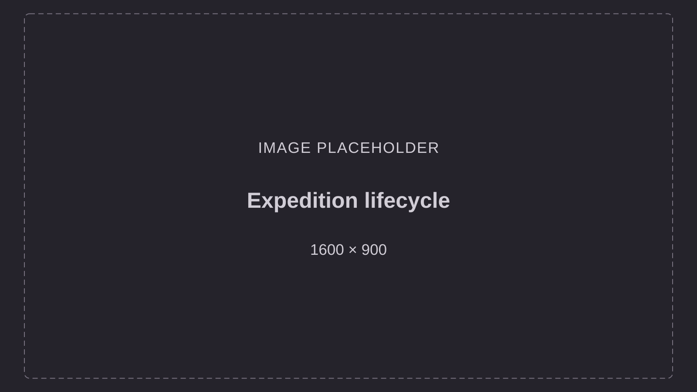
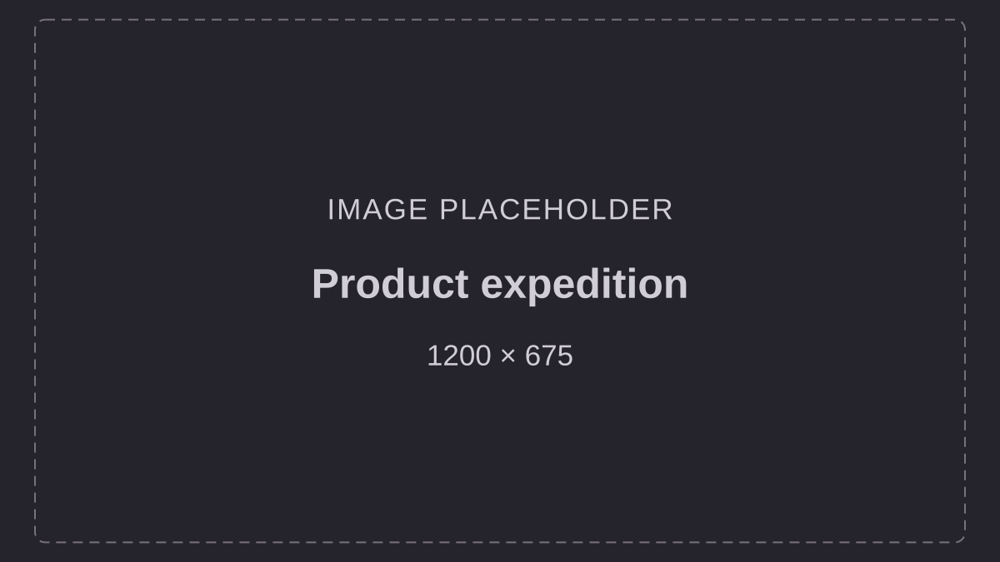

THE JOURNEY
From question to creation.
An Expedition is a project with a human-defined objective and coordinated Quests.
Concept blueprintSEVEN STAGES
The Expedition lifecycle.

- 01
The Call
Frame the objective, constraints and acceptance criteria.
- 02
The Conclave
Lucerna selects workers and identifies dependencies.
- 03
The Descent
Recall relevant knowledge, investigate and plan.
- 04
The Ritual
Execute scoped Quests and coordinate handoffs.
- 05
The Revelation
Test results against evidence and acceptance criteria.
- 06
The Return
Present outcomes, uncertainty and decisions for human review.
- 07
The Chronicle
Distill useful knowledge and failures for Cairn.
ILLUSTRATIVE EXPEDITION
Launch a small 3D-printed product.

The Keeper asks for a validated product concept and launch plan. This is a hypothetical design scenario, not permission to spend, publish or manufacture.
| Stage | Delvers | Expected output |
|---|---|---|
| Discovery | Cyra, Zephyr | Market evidence and opportunity brief |
| Product | Mira, Morwen, Dorian | Prototype and manufacturing feasibility |
| Business | Auren, Valen | Costs and sales approach |
| Promotion | Veyra, Lyra, Nyra | Campaign drafts and creative assets |
| Review | Aldric, Kael | Acceptance and risk review |
| Knowledge | Orin, Vaelis | Decision record and distilled lessons |
HUMAN APPROVAL
Gates before real-world action.
- Approve product direction before production.
- Verify physical prototypes and quality.
- Approve advertising budgets and spending.
- Review public content before publication.